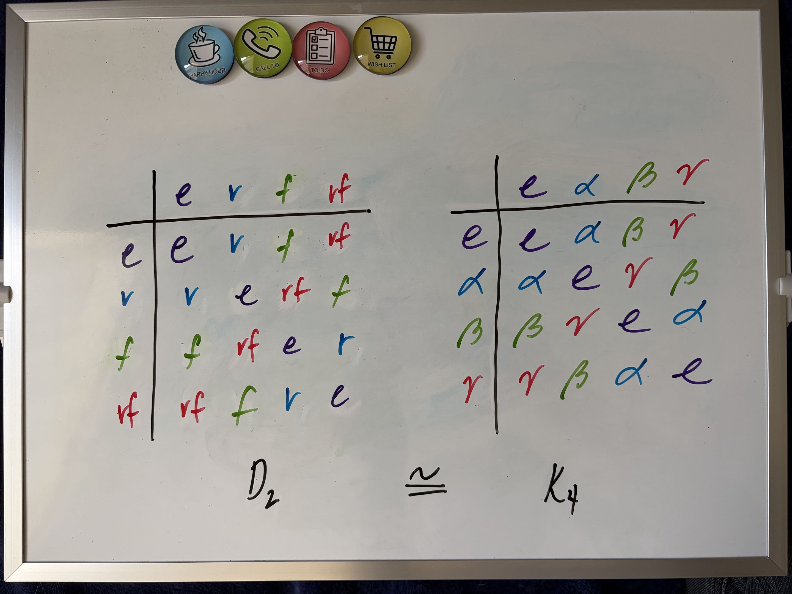
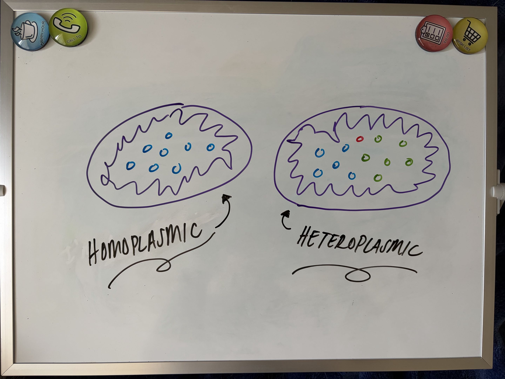
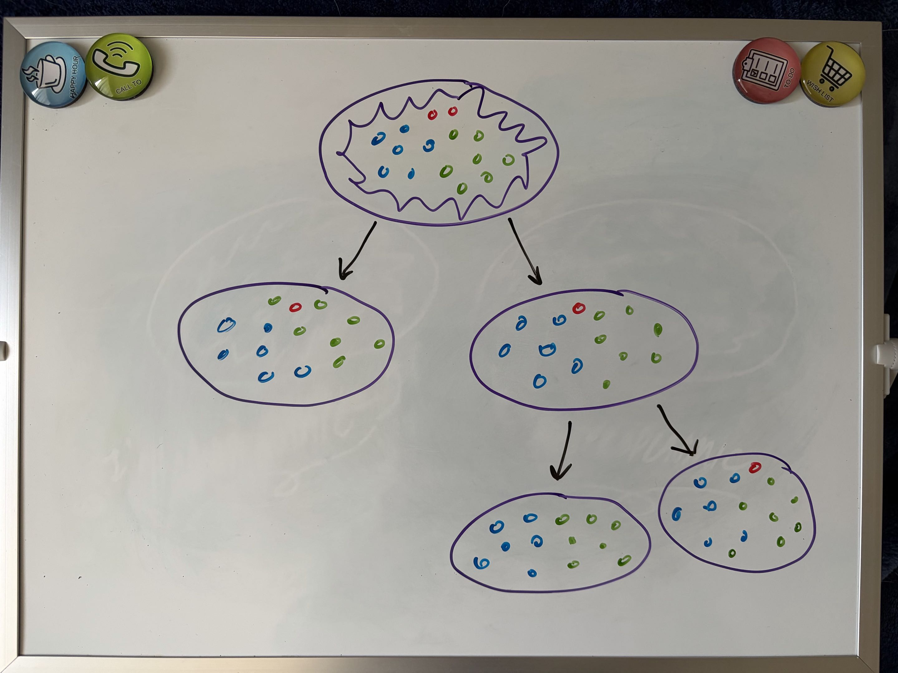

Genetic Code and Evolution Algebras: Same or Different?
Ever wonder how mutations and genetics in nature can be expressed mathematically? Well look no futher -- the genetic code and evolution algebras are here to help!
Introduction
Mendelian genetics refers to the principles of segregation and independent assortment developed by Gregor Mendel in the 1800s. This type of genetics involves the relationships of dominant and recessive traits in alleles, including ''incomplete dominance, codominance, multiple alleles, sex-linked traits, and multigene traits." On the other hand, non-Mendelian genetics refers to the random segregation of non-nuclear organelles, often from the female parent in animals and organisms, that do not follow Mendel's laws.
When describing Mendelian genetics, scholars often use genetic code, which refers to ''the instructions contained in a gene that tell a cell how to make a specific protein.'' Genetic code can be expressed by underlying symmetries, which can be used to form relationships to certian groups (such as Lie groups or Klein 4-groups). When it comes to non-Mendelian genetics, the randomness of these organelles prevents this set of genes from forming groups. Instead, we use evolution algebras, which are still a part of genetic algebras, but are specifically used to algebraically describe non-Mendelian genetics. Genetic algebras are, very generally, a type of algebra that models inheritance in genetics. They are often non-associative, although it is not always the case.
Throughout this post, we will use the world of abstract algebra to compare and contrast the genetic code of Mendelian genetics and the evolution algebras of non-Mendelian genetics.
Comparing Genetic Code and Evolution Algebras
Although they are used to express different types of genetics, genetic code and evolution algebras have a couple of common traits. First, both have to do with genes and genetics, as they both deal with ways to express the passing of genetic traits. Second, both have to do with algebra in relation to biology. As a form of genetic algebra, genetic code is a way to model the mathematical structure of Mendelian genetics. Similarly, as an extension of genetic algebras, evolution algebras model the mathematical structure of non-Mendelian genetics.
Despite some clear commonalities, the genetic code and evolution algebras have quite a few differences, hence the difference in definitions and applications. We will discuss these differences going forward.
Contrasting Genetic Code vs. Evolution Algebras
Genetic Code
The biggest difference between genetic code and evolution algebras is that genetic code forms a group. The genetic code, or Mendelian genetics, can be expressed as either the Lie Group or the Klein 4 Group on how genes are passed on through generations. Taking the Klein 4 Group as an example, we can illustrate how genetic code relates to group theory and abstract algebra. The Klein 4 Group, $K_4$, is an abelian group that is isomorphic to the dihedral group $D_2$. The image below shows this isomorphism.

The genetic code is symmetric using code-doublets, which can be partitioned into two subsets: $$ \begin{align*} M_1 &= \{AC, CC, CU, CG, UC, GC, GU, GG\}\\ M_2 &= \{CA, AA, AU, AG, GA, UA, UU, UG\} \end{align*}. $$
We can then denote the exchange operators $(e, \alpha, \beta, \gamma)$ to define the map: $$ \begin{align*} \alpha\colon &A \leftrightarrow C \, U \leftrightarrow G \\ \beta\colon &A \leftrightarrow U \, C \leftrightarrow G \\ \gamma\colon &A \leftrightarrow G \, U \leftrightarrow C \end{align*}. $$
By defining this map with $e$ as the identity, the genetic code can be expressed as the Klein 4 Group.
Evolution Algebras
Evolution algebras, on the other hand, are non-associative commutative sets. As seen in non-Mendelian genetics, evolution algebras are defined as ways to explain "puzzling" hereditary traits. First, note that in each cell, the mitochondria (the powerhouse of the cell!) can either all be the same (AKA homoplasmic) or they can contain a mix of different molecules (AKA heteroplasmic). See the image below:

The heteroplasmic cell can be expressed as $g_1$ and $g_2$, and the heteroplasmic cell can be expressed as $g_0$. We can illustrate the relationship between evolution algebras and abstract algebra using the image below:

This is the simple case where $g_0$, the heteroplasmic cell, is made up of both heteroplasmic and homoplasmic cells. In other words, $g_0^2 = \pi g_0 + \alpha g_1 + \beta g_2$, where the Greek letters represent coefficients. We also have the relations $g_1^2 = g_1$ and $g_2^2 = g_2$ for each of the homoplasmic cells.
However, what happens when we have mutations? Thanks to the developments by JP Tian, we are able to express these mutations using evolution algebras. For example, when the mitochondria disappear, we get algebras such as $g_2^2 = 0$. Similarly, when the homoplasmic cell suddenly gets new mitochondria and become heteroplasmic, we get algebras such as $g_2^2 = \mu g_1 + \rho g_2.$
Conclusion
Overall, both types of genetic sets can be described using abstract algebra, even when they differ in structure. Genetic code can be expressed using Klein 4 Groups (or other groups, as we saw the isomorphism). Evolution algebras can be expressed through algebraic manipulation and intelligent use of coefficients. Both are forms of genetic algebras, and both are key concepts used to describe why things look the way they do.
Sources
Fernández-Ternero, D., et al. "Using the Evolution Operator to Classify Evolution Algebras." Mathematical and Computational Applications, vol. 26, no. 3: 57, 2021, https://doi.org/10.3390/mca26030057.
"Genetic Code." National Human Genome Research Institute, 2026, https://www.genome.gov/genetics-glossary/Genetic-Code.
Mukhamedov, Farrukh and Izzat Qaralleh. "On Derivations of Genetic Algebras." Journal of Physics: Conference Series, vol. 553, IOP Publishing Ltd., 2014, https://doi.org/10.1088/1742-6596/553/1/012004.
Rietman, Edward A., et al. "Review and application of group theory to molecular systems biology." Theoretical Biology & Medical Modelling, vol. 8, no. 21, 2011, https://doi.org/10.1186/1742-4682-8-21.
Strome, Susan, et al. "Clarifying Mendelian vs non-Mendelian inheritance." Genetics, edited by D. Greenstein, vol. 227, no. 3: iyae078, Oxford University Press, 2024, https://doi.org/10.1093/genetics/iyae078.
Tian, Jianjun Paul. "Chapter 5: Evolution algebras and non-Mendelian genetics." Evolution Algebras and their Applications, Lecture Notes in Mathematics, vol. 1921, 2008, pp. 91-107, https://www.math.uci.edu/~brusso/tianLNIM5.pdf.
Tian, Jianjun Paul. "A brief introduction to evolution algebras." Mathematics Department, The College of William and Mary, https://people.nmsu.edu/jtian/publications/intro-evolution-alg.pdf.